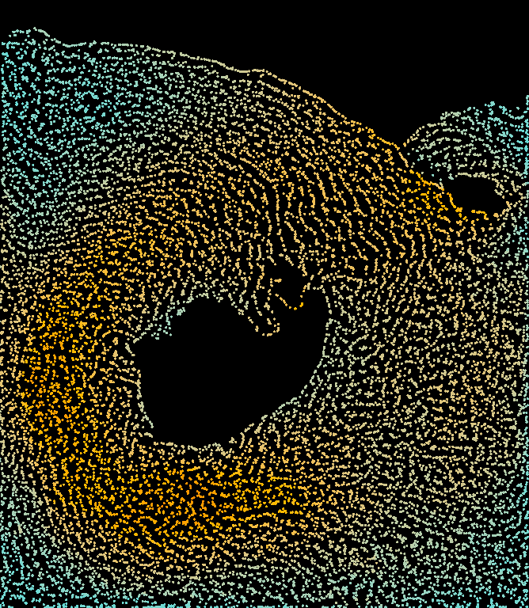
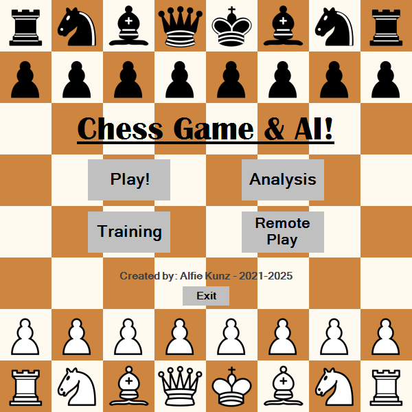
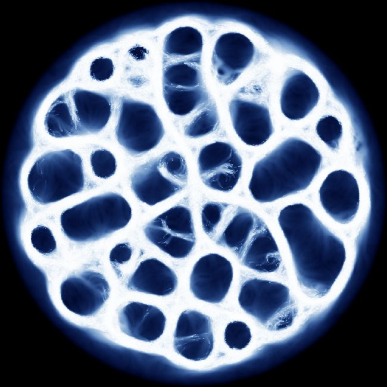
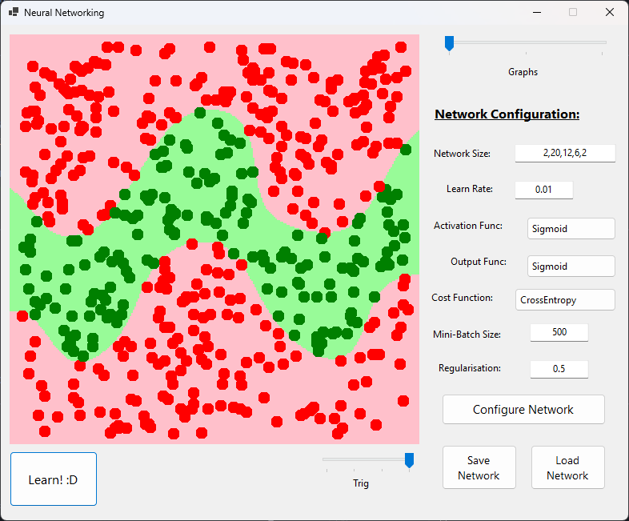

Self-directed original CFD research, applying cutting-edge technologies in novel scenarios to investigate high-performance, momentum-conserving vortices. Identified a novel Reynolds Number value of 5420 - justifies the report as a worthwhile contribution to the industry.
Independent derivation and implementation of a real-time Eulerian-Lagrangian APIC system (C#, Unity), using techniques such as Conjugate Gradient Method with MICT-0 Preconditioning, and GPU parallelism. Optimised rendering via Instanced Procedural Drawing (HLSL).
Authored a rigorous, well-referenced technical essay on my contributions to the field, using LaTeX and Tikz figures. Demonstrated strong scientific communication by presenting my findings to two specialist Warwick professors (with no prior exposure to the implementation).

Architected a commercial-quality Chess AI project, which boasts an 'International Master' ELO of ~2850 (as of v10.0). Designed a sophisticated chess-playing interface to support the AI (for example, through a hand-crafted opening book from millions of games) and user interactions.
Robustly engineered and optimised a custom NegaMax heuristic AI algorithm, using techniques such as Alpha-Beta Pruning, Zobrist Hashing, Iterative Deepening, and Dynamic Aspiration Windows.
Evaluated against other variations & models (by integrating models into a sophisticated, custom-made sui-style benchmarking system).
Awarded 100% on the initial A-Level CS NEA; recognised by the project supervisor as the 'best he had seen' in his years of teaching.

Conducted biophysical research on agent-based transport networks (parallelised on the GPU as a compute shader), and their physical evolution into emergent ecosystems.
Self-taught C# and HLSL, under the Unity Game Engine.

Designed a NN algorithm to recognise hand-drawn digits / doodles (achieving ~98% on the MNIST dataset, within 2 minutes of training), employing high-level ML concepts such as back propagation, regularisation, and overfitting.
Recent exploration of Graph-NNs and Physics-Informed-NNs to implement into my recent CFD project (ie: for weather monitoring).
